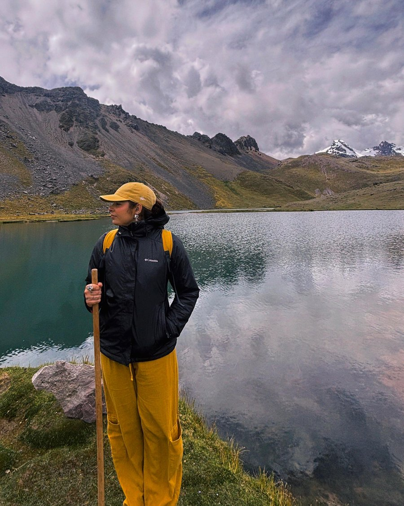

Pós-graduação em Administração de Empresas
Fundação Getulio Vargas (FGV)
Conclusão em janeiro de 2026
Marketing Operations, Growth & Business Operations
Eu organizo ideias, processos e dados para fazer projetos avançarem.
Manifesto
Comecei na ciência, passei por análise técnica em ambiente regulado, fui para rotinas administrativas e financeiras e cheguei em marketing, aquisição e produtos digitais.
Gosto de pegar um projeto que ainda está solto e deixá-lo em pé.
Um recorte do que construí em growth, operações, dados e automação.
Trajetória
Não foi uma linha reta, e isso virou o meu diferencial.
Método
Investigo o contexto, o objetivo e o fluxo real antes de propor qualquer coisa.
Transformo informação espalhada em prioridades, responsáveis, documentos e etapas claras.
Crio as campanhas, jornadas, relatórios e automações que sustentam o dia a dia.
Acompanho sinais, resultados e feedback para corrigir a rota sem drama.
Skills & tools
HTML, CSS e JavaScript aparecem aqui apenas no contexto deste portfólio.
Formação
Fundação Getulio Vargas (FGV)
Conclusão em janeiro de 2026
Universidade Federal de Minas Gerais (UFMG)
Conclusão em janeiro de 2023
A formação científica me deu o que uso todo dia.
Minha trajetória não foi construída em linha reta.
Fora dos cargos, sou movida por curiosidade, viagens, idiomas, cultura e tecnologia.

Contato
Aberta a vagas, projetos e processos seletivos.